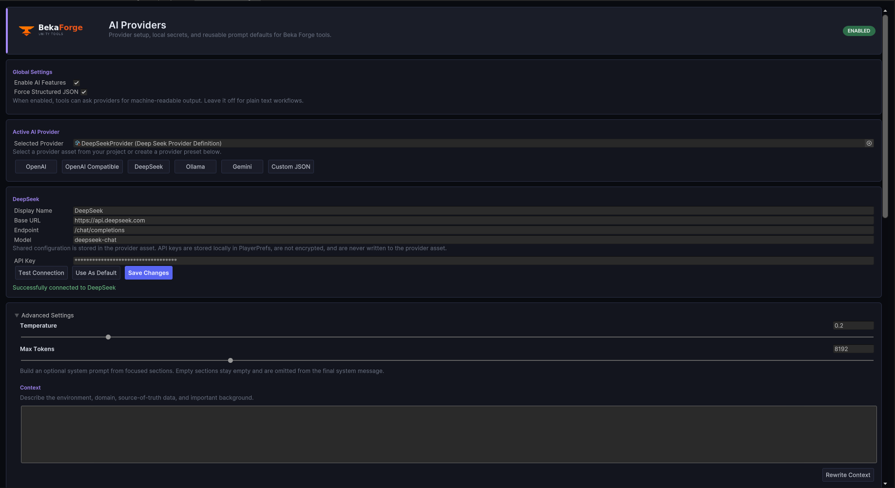

Getting Started
AI Providers is independent. You can import it alone or alongside other Beka Forge tools. The first successful setup is: create or select a provider asset, enter a local API key, and send a minimal prompt.
Requirements and scope
- Unity 2021.3 LTS or newer.
- No hard dependency on Dialogue Graph System or AI Extension.
- Runtime assembly:
AiProviders.Runtime. - Editor assembly:
AiProviders.Editor.
First-time editor flow
- Import
Assets/AiProviders. - Open
Tools > BekaForge > AI Providers. - Create or select a provider asset.
- Store the API key locally for that provider GUID.
- Run the provider test request.
- Use the provider asset from editor tooling or runtime code.
Provider settings panel

This is the first editor surface most users touch: choose a provider, enter a local key, test the connection, and save the default configuration.
Minimal blocking request
using AiProviders.Runtime;
using System.Collections.Generic;
var chat = new LlmChatRequest
{
messages = new List<LlmMessage>
{
new LlmMessage { role = LlmMessageRole.System, content = "You are a helpful assistant." },
new LlmMessage { role = LlmMessageRole.User, content = "Hello!" }
}
};
if (AiProvidersService.TrySendPrompt(provider, chat, out string response, out string error))
{
Debug.Log(response);
}When to prefer the coroutine path
The blocking path is primarily editor-oriented. For runtime usage, prefer SendPromptCoroutine so the caller is not stuck inside a busy wait loop.